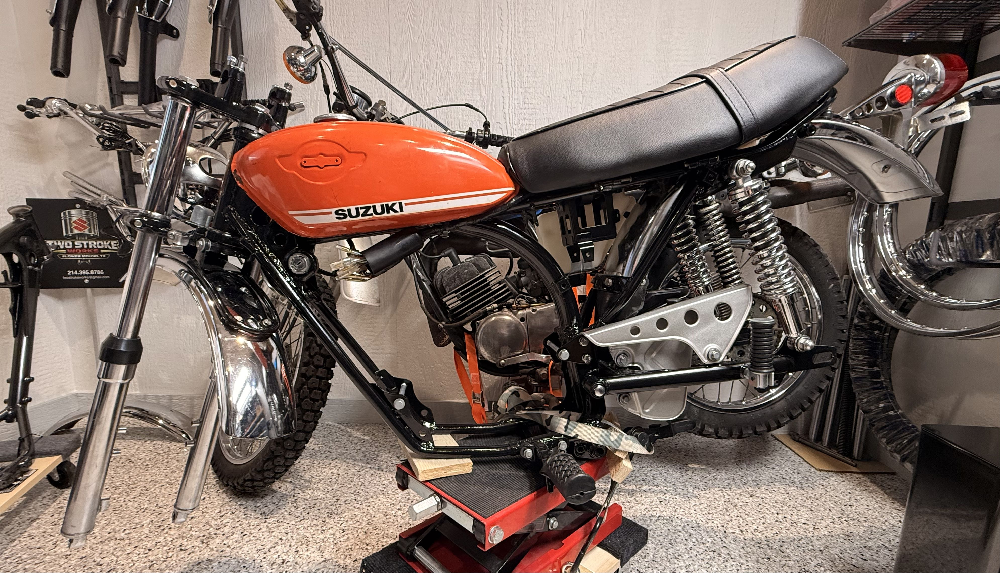
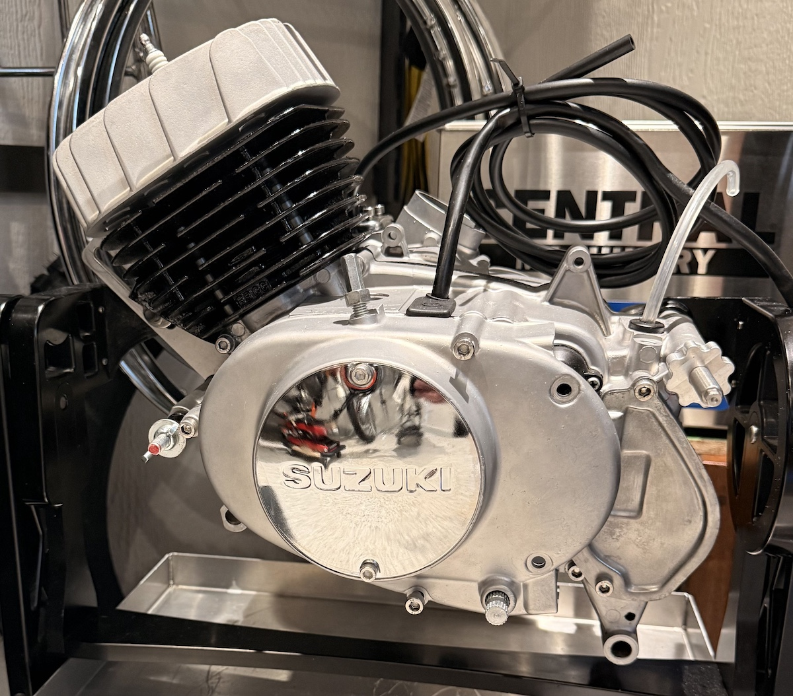
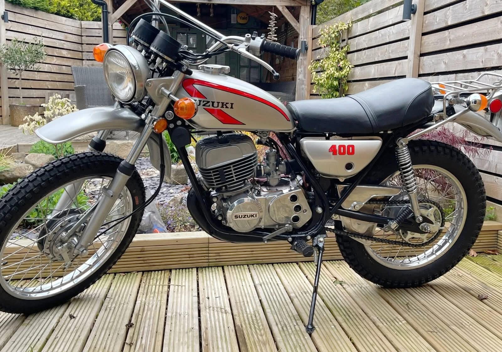
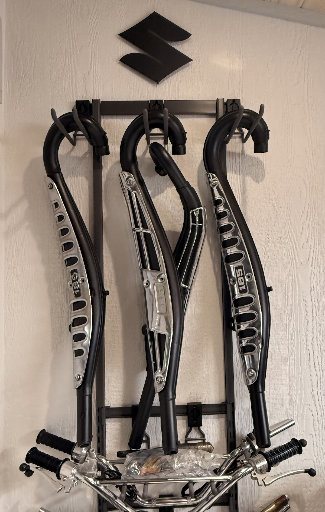

Two Stroke Works is rooted in a simple idea: bring classic Suzuki TS bikes back to life with care, patience, and mechanical honesty. From full restorations to part refinishing, details matter.
Whether it is a clean rider, a period-correct rebuild, or a hard-to-find component, the goal is always the same — preserve the look, sound, and feel that made these bikes memorable in the first place.

A focused vintage Suzuki TS restoration built around clean factory lines, period-correct character, and the details that make these machines worth preserving.
From parts refinement to final presentation, the goal is simple: build a bike that feels honest, complete, and unmistakably Suzuki.



Based in Flower Mound, Texas. Reach out for restoration work, parts, or to talk through a vintage Suzuki TS build.